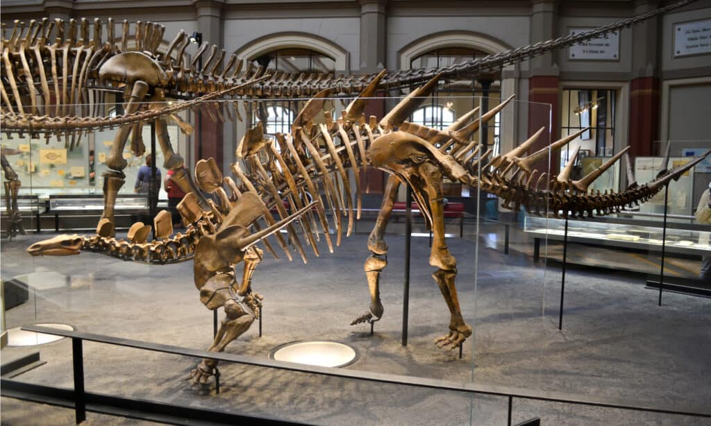

Kentrosaurus
Khủng Long Gai Nhọn kỷ Jura
Tổng quan
Kỷ
Jurassic
Họ
Stegosauridae
Chi
Kentrosaurus
Dài
4.5 m
Cao
2 m
Nặng
1 tấn
Thức ăn

Kentrosaurus là một chi khủng long phiến sừng từ cuối kỷ Jura, có loài điền hình là Kentrosaurus Aethiopicus. Thường được coi là một thành viên nguyên thủy của họ Stegosauria.
Nguồn: wikipedia.org
Phân bố
Khu vực phía Đông Châu Phi
Thông tin thêm về Kentrosaurus
Kỷ nguyên và phân bố
Kentrosaurus từng tồn tại vào cuối kỷ Jurassic, niên đại vào giai đoạn Kimmeridgia, giữa khoảng 155,7 ± 4 Ma và 150,8 ± 4 Ma (triệu năm trước). Hóa thạch của Kentrosaurus chỉ được tìm thấy ở thành hệ Tendaguru thuộc Tanzania, phía Đông Châu Phi, tất cả hóa thạch phát hiện được đều thuộc về một loài đại diện K. Aethiopicus. Chúng có thể đã sống trong các khu rừng ấm áp và tươi tốt ở miền đông châu Phi, vì ở đây đã cung cấp cho Kentrosaurus những nhu cầu sinh tồn cơ bản của nó.
Tên khoa học
Được mô tả và đặt tên bởi nhà cổ sinh vật học Đức Edwin Hennig vào năm 1915. Tên Kentrosaurus có nghĩa là "Thằn Lằn Gai", được tạo ra từ các từ tiếng Hy Lạp κέντρον (kentron) có nghĩa là "Điểm nhọn" và σαῦρος (saurus) có nghĩa là "thằn lằn". Cái tên này dựa vào mô tả của rất nhiều gai trên cơ thể và đuôi của sinh vật này.Tên loài đại diện K.Aethiopcus với “Aethiopicus” đã được thêm vào bởi Henning để chỉ ra rằng nó có nguồn gốc từ châu Phi.
Kích thước
Kentrosaurus nhỏ hơn so với Stegosaurus. Nó có chiều dài khoảng 4,5m tính từ đầu mõm đến cuối đuôi. Kentrosaurus được ước tính rằng Kentrosaurus có thể đạt tổng chiều dài 5,5m. Nó có thể cao từ 2 đến 3.5 mét (11,5 ft) trong khi vẫn duy trì thế đứng bằng bốn chân. Kentrosaurus là một sinh vật nặng và dày. Nó có trọng lượng ước tính khoảng 1 đến 2 tấn đối với một con Kentrosaurus trưởng thành.
Ngoại hình
Kentrosaurus có cơ thể điển hình của một con khủng long với chi trước ngắn và chi sau dài hơn, tư thế di chuyển bằng bốn chân. Đầu phẳng và kéo dài với một bộ não rất nhỏ, cổ dài và bộ răng của một loài động vật ăn cỏ, đây cũng là đặc trưng của các loài Stegosaurs khác.
Chúng là phiên bản nhỏ hơn và có nhiều gai nhọn hơn của loài Stegosaurus nổi tiếng ở Bắc Mỹ, tuy nhiên chúng dường như là mối đe dọa thực sự. Kentrosaurus có một dãy gai nhọn chạy dọc lưng, hai bên và đuôi, đầy cơ bắp và chắc khỏe, khiến cho Stegosaurus trông có vẻ "mềm" hơn.
Chế độ ăn
Răng của Kentrosaurus xác nhận rằng chúng là động vật ăn cỏ. Chúng có một chế độ ăn uống đa dạng. Kentrosaurus có một cái mỏ hẹp với một số răng má ngoài mỏ của nó. Nó rất có thể ăn thực vật ở tầng thấp trong phần lớn chế độ ăn uống của mình vì thế đứng bốn chân của nó. Ví dụ về những loại cây như vậy sẽ bao gồm dương xỉ, cỏ đuôi ngựa và rêu.
Tuy nhiên, vì các chi sau của nó dài hơn và khỏe hơn các chi trước nên con vật có thể đứng dậy trong giây lát bằng các chi sau của nó. Đặc điểm này có thể khiến nó thích thú với những loài thực vật cao hơn như cây lá kim, cây vạn tuế và cây bạch quả. Kentrosaurus rất có thể phải tiêu thụ hơn 300 pound thức ăn hàng ngày để tồn tại. Vì vậy, có thể chúng dành phần lớn thời gian hoạt động để tìm kiếm thức ăn.
Khám phá
Những hóa thạch đầu tiên của Kentrosaurus được phát hiện vào năm 1909. Trưởng đoàn thám hiểm Tendaguru của Đức, Werner Janesch, đã phân loại hóa thạch này là một loài Stegosaur vào ngày 24 tháng 7 năm 1910. Tuy nhiên, nó đã được mô tả chính xác vào năm 1915 bởi Edwin Henning. Tuy nhiên, không có hóa thạch hoàn chỉnh nào được tìm thấy. Nhưng tập hợp các phần riêng lẻ còn lại được tìm thấy đã cung cấp một bản phác thảo gần như hoàn chỉnh về Kentrosaurus.
Khứu giác nhạy bén
Giống như các loài Stegosaurs khác, Kentrosaurus có bộ não nhỏ so với kích thước của nó. Tuy nhiên, bất chấp kích thước, bộ não của Kentrosaurus có các dây thần kinh khứu giác cực kỳ tiên tiến. Con vật có khứu giác nhạy bén. Nó có thể ngửi thấy những con khủng long khác và những kẻ săn mồi tiềm năng đang đến gần.
Khứu giác này rất quan trọng cho sự sống còn của nó. Kentrosaurus ăn rất nhiều để duy trì sự trao đổi chất của cơ thể. Nó có thể phát hiện mùi trong môi trường của nó và định vị thức ăn có sẵn gần đó.
Những chiếc gai chết chóc
Các tấm vảy ở Stegosaurus đã được chuyển đổi thành gai nhọn ở Kentrosaurus. Không giống như Stegosaurus chỉ có bốn gai ở đuôi, theo hồ sơ hóa thạch thì Kentrosaurus có tới 15 cặp gai từ cổ tới đuôi. Các gai của Kentrosaurus rất dài, các nhà khảo cổ đã phát hiện ra một số mẫu vật gai có chiều dài xương lõi lên đến 731mm. Những chiếc gai có cấu tạo tương tự như sừng, khiến chúng phù hợp để phòng thủ và tấn công những con khủng long săn mồi khác.